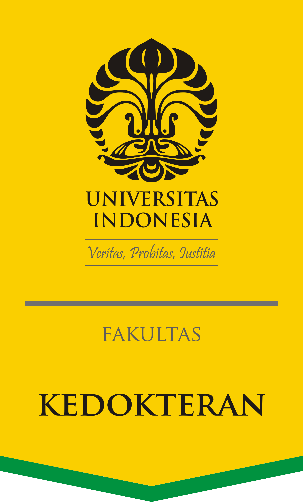

PENELITIAN · INSTALASI GIZI RSCM
Dapur panas dan kesehatan kulit pekerja
3
pemeriksaan sederhana
Ajakan untuk pekerja Instalasi Gizi RSCM ikut penelitian yang mempelajari hubungan panas tempat kerja dengan kulit dan tubuh.
Suhu kerja
Panas area kerja diukur dengan WBGT meter
Kulit lengan
Tewameter menempel sebentar, tanpa rasa sakit
Darah
Sampel sekali, setelah shift
SYARAT IKUT
Berusia 18–55 tahun
Bekerja di Instalasi Gizi RSCM minimal 3 bulan
Bekerja lebih dari 6 jam per shift di unit Instalasi Gizi
Bersedia menandatangani lembar persetujuan
TIDAK BISA IKUT JIKA
Diabetes tipe 2, penyakit jantung, stroke, ginjal kronis, autoimun, atau kanker
Infeksi akut dalam 1 minggu terakhir, atau rutin minum obat diuretik
Perokok berat
Luka, eksim, atau psoriasis di lengan bawah
Sukarela
Data dirahasiakan
Boleh berhenti kapan saja
Peneliti · PPDS Kedokteran Okupasi FKUI
dr. Vidya Cecilia
WA 08xx-xxxx-xxxx